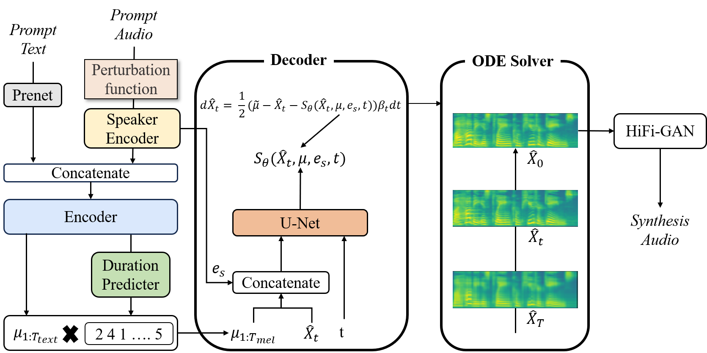

Zero-Shot Multi Speaker Speech Synthesis
Abstract
음성 합성이란 텍스트를 음성 파형으로 변환하는 기술을 말한다. 딥러닝의 발전으로 신경망 기반의 음성 합성 기술은 다양한 방면으로 연구되고 있으며, 합성된 음성의 품질도 크게 향상되었다. 특히, 다양한 도메인에서 높은 성능을 보이는 Denoising Diffusion Probabilistic Model (DDPM)을 기반으로 제안된 음성 합성 모델인 Grad-TTS는 기존의 음성 합성 모델과 비교하여 높은 품질의 음성을 생성하며, 화자 ID를 입력으로 받아 Multi Speaker 음성 합성을 지원한다. 하지만 화자 ID를 입력으로 받기 때문에 Unseen Speaker에 대한 음성 합성이 불가능하다는 단점이 있다. 따라서 본 논문에서는 Grad-TTS 구조를 개선하여 효과적인 Zero-shot Multi Speaker 음성 합성 모델을 제안한다. 제안하는 방식은 사전 학습된 화자 인식 모델을 사용하여 다양한 형태의 화자 정보를 받을 수 있도록 한다. 또한, Information Perturbation을 통해 화자 정보를 변환함으로써 데이터 셋이 보유한 화자 이외의 다양한 화자 정보를 모델이 학습할 수 있도록 한다. 이러한 방식을 통해 화자 정보에 대한 controllability를 높이고, 다양한 화자에 대한 모델의 일반화 성능을 높일 수 있다. 제안하는 방식의 성능을 평가하기 위해 객관적인 성능 지표인 Speaker Encoder Cosine Simulality (SECS), Mean Opinion Score (MOS)를 측정하였다. Seen Speaker에 대한 음성 합성 성능을 평가하기 위해 Grad-TTS와 비교를 수행하였고, 그 결과 Grad-TTS보다 우수한 음성 합성 성능을 보였다. 또한, Unseen Speaker에 대한 음성 합성 성능을 평가하기 위해 SC-GlowTTS, YourTTS와의 비교를 수행하였으며, 그 결과 Zero-shot Multi Speaker 음성 합성 모델인 YourTTS와 비슷한 성능을 보여주었다.
The structure of the proposed method
The audio sample below is a sample synthesized using the model proposed in this paper.
Speech synthesis sample for Seen speaker - LibriTTS
Ground Truths
Grad-TTS
Ours
Speech synthesis sample for Unseen speaker - VCTK
Ground Truths
SC-GlowTTS
YourTTS
Ours
Source of voice samples used for comparison
The voice samples of SC-glowTTS and YourTTS used for model comparison were the samples provided in the link below.